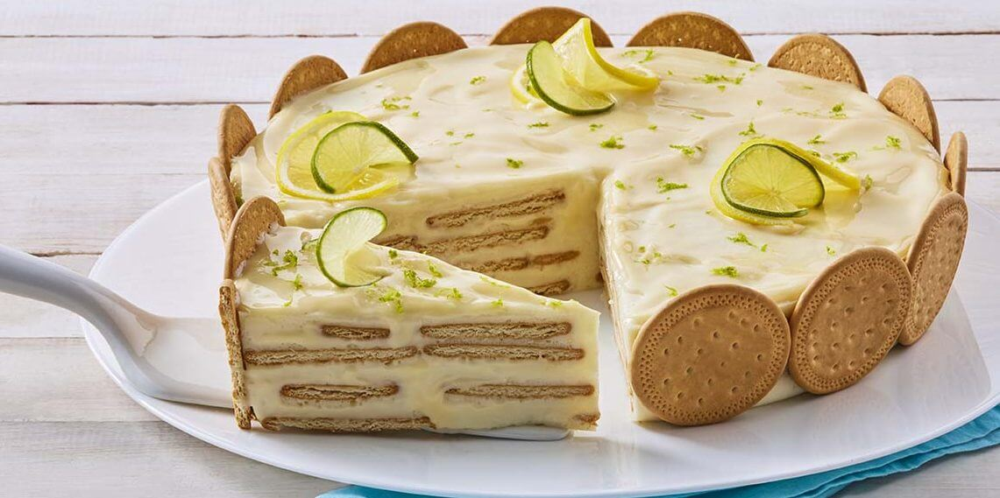

Enjoy a delicious lemon dessert with Marías cookies, a family favorite recipe. A refreshing and easy to prepare dessert.

Indulge in a delightful and refreshing lemon dessert featuring Marias cookies, a beloved family classic. This treat combines the light, crisp texture of Marías cookies with a creamy, tangy lemon filling, creating a perfect balance of flavors that is both satisfying and refreshing. With its smooth layers and just the right hint of citrus, this dessert is ideal for hot days or as a light finish to any meal.
Quick and easy to prepare, this lemon dessert requires minimal ingredients and effort, making it perfect for family gatherings or last-minute treats. The layering of cookies and lemon mixture results in a beautiful presentation, with each slice revealing the contrast of textures and flavors. This dessert is a guaranteed crowd-pleaser that will leave everyone asking for seconds.